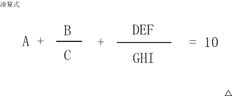
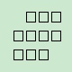
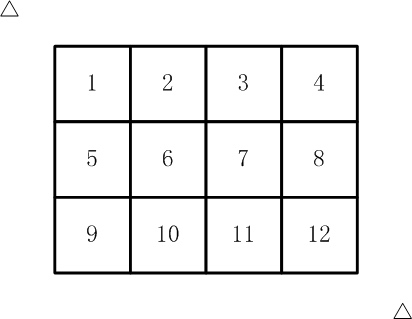
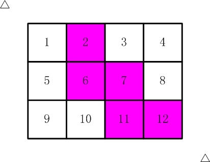
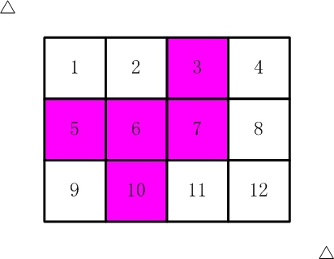
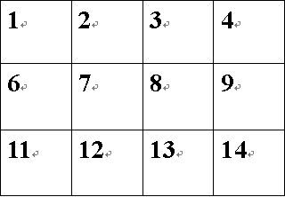

1.煤球数目
有一堆煤球，堆成三角棱锥形。具体：
第一层放1个，
第二层3个（排列成三角形），
第三层6个（排列成三角形），
第四层10个（排列成三角形），
....
如果一共有100层，共有多少个煤球？
请填表示煤球总数目的数字。
思路：1 2 3 4 5 6……这一个等差数列的前n项和为(1+n)*n/2
第1层的煤球数目为1
第2层的煤球数目为1+2
第3层的煤球数目为1+2+3
……
第i层的煤球数组为(1+n)*n/2
#include <iostream>
using namespace std;
int main()
{
int sum=0,n;
cin>>n;
for(int i=1;i<=n;i++)
{
sum+=i*(i+1)/2;
}
cout<<sum<<endl;
return 0;
}
2.生日蜡烛
某君从某年开始每年都举办一次生日party，并且每次都要吹熄与年龄相同根数的蜡烛。
现在算起来，他一共吹熄了236根蜡烛。
请问，他从多少岁开始过生日party的？
请填写他开始过生日party的年龄数
思路：1 2 3 4 5 6……这一个等差数列的前n项和为(1+n)*n/2
设从a岁开始过生日，到了b岁一共吹熄了236根蜡烛。
即为：(a+b)(b-a+1)/2=236
#include <iostream>
using namespace std;
int main()
{
for(int i=1;i<=100;i++)
for(int j=i;j<=100;j++)
{
if((i+j)*(j-i+1)/2==236)
cout<<i<<" "<<j<<endl;
}
return 0;
}
3.凑算式
如图，这个算式中A~I代表1~9的数字，不同的字母代表不同的数字。

比如：
6+8/3+952/714 就是一种解法，
5+3/1+972/486 是另一种解法。
这个算式一共有多少种解法？
思路：暴力解决，注意每个字母代表的数字不相等。
答案：29
#include <iostream>
using namespace std;
int main()
{
int sum=0;
for(int a=1; a<=9; a++)
for(int b=1; b<=9; b++)
{
if(a==b) continue;
for(int c=1; c<=9; c++)
{
if(c==a||c==b) continue;
for(int d=1; d<=9; d++)
{
if(d==a||d==b||d==c)continue;
for(int e=1; e<=9; e++)
{
if(e==a||e==b||e==c||e==d) continue;
for(int f=1; f<=9; f++)
{
if(f==a||f==b||f==c||f==d||f==e) continue;
for(int g=1; g<=9; g++)
{
if(g==a||g==b||g==c||g==d||g==e||g==f) continue;
for(int h=1; h<=9; h++)
{
if(h==a||h==b||h==c||h==d||h==e||h==f||h==g) continue;
for(int i=1; i<=9; i++)
{
if(i==a||i==b||i==c||i==d||i==e||i==f||i==g||i==h) continue;
int t1=a*c*(100*g+10*h+i);
int t2=b*(100*g+10*h+i);
int t3=c*(100*d+10*e+f);
int t4=10*c*(100*g+10*h+i);
if(t1+t2+t3==t4)
sum++;
}
}
}
}
}
}
}
}
cout<<sum<<endl;
return 0;
}
4.快速排序
排序在各种场合经常被用到。
快速排序是十分常用的高效率的算法。
其思想是：先选一个“标尺”，
用它把整个队列过一遍筛子，
以保证：其左边的元素都不大于它，其右边的元素都不小于它。
这样，排序问题就被分割为两个子区间。
再分别对子区间排序就可以了。
下面的代码是一种实现，请分析并填写划线部分缺少的代码。
#include <stdio.h>
void swap(int a[], int i, int j)
{
int t = a[i];
a[i] = a[j];
a[j] = t;
}
int partition(int a[], int p, int r)
{
int i = p;
int j = r + 1;
int x = a[p];
while(1){
while(i<r && a[++i]<x);
while(a[--j]>x);
if(i>=j) break;
swap(a,i,j);
}
_______________;//填空位置
return j;
}
void quicksort(int a[], int p, int r)
{
if(p<r){
int q = partition(a,p,r);
quicksort(a,p,q-1);
quicksort(a,q+1,r);
}
}
int main()
{
int i;
int a[] = {5,13,6,24,2,8,19,27,6,12,1,17};
int N = 12;
quicksort(a, 0, N-1);
for(i=0; i<N; i++) printf("%d ", a[i]);
printf("\n");
return 0;
}
思路：快速排序，填空位置为经过比较之后，将最初选的“标尺”放在中间，即：标尺左边的数小于标尺，右边的数则大于它。注意不要多填分号。
答案：swap(a,p,j)
网友年龄（A组）
某君新认识一网友。 当问及年龄时，他的网友说： “我的年龄是个2位数，我比儿子大27岁, 如果把我的年龄的两位数字交换位置，刚好就是我儿子的年龄”
请你计算：网友的年龄一共有多少种可能情况？
提示：30岁就是其中一种可能哦. 请填写表示可能情况的种数。
注意：你提交的应该是一个整数，不要填写任何多余的内容或说明性文字。
#include <iostream>
using namespace std;
int main()
{
int m = 0;
for(int i=0;i<=9;i++)
for(int j=0;j<=9;j++)
{
if(9*(i-j)==27){
m++;
}
}
cout<<m<<endl;
return 0;
}
枚举一下：7
方格填数
如下的10个格子

填入0~9的数字。要求：连续的两个数字不能相邻。 （左右、上下、对角都算相邻）
一共有多少种可能的填数方案？
请填写表示方案数目的整数。
注意：你提交的应该是一个整数，不要填写任何多余的内容或说明性文字。
#include <stdio.h>
#include <math.h>
#include <stdlib.h>
using namespace std;
/*本来要判断八个格子，
*但是由于是从左往右从上往下填的，
*只要判断左、左上、上、右上
*/
const int dx[]={0,-1,-1,-1};
const int dy[]={-1,-1,0,1};
const int INF=1e9;
bool used[10];
int ans=0;
int a[5][5];
bool alright(int n,int x,int y)
{
for (int i=0;i<4;i++) {
int xx=x+dx[i],yy=y+dy[i];
if (xx<1||yy<1||xx>3||yy>4) continue;
if (abs(n-a[xx][yy])==1) return false;
}
return true;
}
void dfs(int x,int y)
{
if (x==3&&y==4) {
ans++;
return;
}
for (int i=0;i<=9;i++) {
if (!used[i]&&alright(i,x,y)) {
a[x][y]=i;
used[i]=true;
if (y==4) dfs(x+1,1);
else dfs(x,y+1);
used[i]=false;
a[x][y]=-INF;
}
}
}
int main()
{
for (int i=1;i<=3;i++) {
for (int j=1;j<=4;j++) {
a[i][j]=-INF;
}
}
dfs(1,2);
printf("%d\n",ans);
return 0;
}
正确答案：1580
消除尾一
下面的代码把一个整数的二进制表示的最右边的连续的1全部变成0
如果最后一位是0，则原数字保持不变。
如果采用代码中的测试数据，应该输出：
00000000000000000000000001100111 00000000000000000000000001100000
00000000000000000000000000001100 00000000000000000000000000001100
请仔细阅读程序，填写划线部分缺少的代码。
#include <stdio.h>
void f(int x)
{
int i;
for(i=0; i<32; i++) printf("%d", (x>>(31-i))&1);
printf(" ");
x = _______________________;
for(i=0; i<32; i++) printf("%d", (x>>(31-i))&1);
printf("\n");
}
int main()
{
f(103);
f(12);
return 0;
}
要消除x末尾所有的1，可以先把x加上1：
00000000000000000000000001100111 + 1 =
00000000000000000000000001101000
答案为：x&(x+1)
寒假作业
现在小学的数学题目也不是那么好玩的。
看看这个寒假作业：
□ + □ = □
□ - □ = □
□ × □ = □
□ ÷ □ = □
每个方块代表1~13中的某一个数字，但不能重复。
比如：
6 + 7 = 13
9 - 8 = 1
3 * 4 = 12
10 / 2 = 5
以及：
7 + 6 = 13
9 - 8 = 1
3 * 4 = 12
10 / 2 = 5
就算两种解法。（加法，乘法交换律后算不同的方案）
你一共找到了多少种方案？
请填写表示方案数目的整数。
注意：你提交的应该是一个整数，不要填写任何多余的内容或说明性文字。
#include <bits/stdc++.h>
using namespace std;
bool used[15];
int a[15];
int ans=0;
void dfs(int dep)
{
if (dep==13) {
//必须整除，变成乘法判断
if (a[10]==a[11]*a[12]) ans++;
return;
}
if (dep==10) {
if (a[7]*a[8]!=a[9]) return;
}
if (dep==7) {
if (a[4]-a[5]!=a[6]) return;
}
if (dep==4) {
if (a[1]+a[2]!=a[3]) return;
}
for (int i=1;i<=13;i++) {
if (!used[i]) {
used[i]=true;
a[dep]=i;
dfs(dep+1);
a[dep]=-1;
used[i]=false;
}
}
}
int main()
{
dfs(1);
printf("%d\n",ans);
return 0;
}
**答案：64 **
剪邮票
如【图1.jpg】, 有12张连在一起的12生肖的邮票。
现在你要从中剪下5张来，要求必须是连着的。 （仅仅连接一个角不算相连）
比如，【图2.jpg】，【图3.jpg】中，粉红色所示部分就是合格的剪取。


思路：先找到5个数的组合，然后从第一个数字开始遍历，经过上下左右操作检测5个数是否都被访问一遍，如果5个数都可以遍历到则种类+1。
在原图中向上为-4，向下为+4，向左为-1，向右为+1，但是遇到3 4 5 7 8这种4+1=5但是这种情况不符合，所以重构一下原图：

这样，向上为-5，向下为+5，向左为-1，向右为+1，避免了每行最后一个+1后等于下一行第一个的情况。
#include <iostream>
using namespace std;
int mp[12]= {1,2,3,4,6,7,8,9,11,12,13,14};
int aa[5],vis[5],sum=0;
int b[4]= {-1,1,-5,+5};
void dfs(int n)
{
for(int i=0; i<4; i++)
{
int t=aa[n]+b[i];
if(t<1||t>14||t==5||t==10) continue;
for(int j=0; j<5; j++)
if(!vis[j]&&aa[j]==t)
{
vis[j]=1;
dfs(j);
}
}
}
int main()
{
for(int a=0; a<12; a++)
for(int b=a+1; b<12; b++)
for(int c=b+1; c<12; c++)
for(int d=c+1; d<12; d++)
for(int e=d+1; e<12; e++)
{
aa[0]=mp[a];
aa[1]=mp[b];
aa[2]=mp[c];
aa[3]=mp[d];
aa[4]=mp[e];
for(int i=0; i<5; i++)
vis[i]=0;
vis[0]=1;
dfs(0);
int flag=1;;
for(int i=0; i<5; i++)
{
if(vis[i]!=1)
{
flag=0;
break;
}
}
if(flag==0) continue;
else
sum++;
}
cout<<sum<<endl;
return 0;
}
答案：116
四平方和
四平方和定理，又称为拉格朗日定理：
每个正整数都可以表示为至多4个正整数的平方和。
如果把0包括进去，就正好可以表示为4个数的平方和。
比如：
5 = 02 + 02 + 12 + 22
7 = 12 + 12 + 12 + 22
（符号表示乘方的意思）
对于一个给定的正整数，可能存在多种平方和的表示法。
要求你对4个数排序： 0 <= a <= b <= c <= d
并对所有的可能表示法按 a,b,c,d 为联合主键升序排列，最后输出第一个表示法
程序输入为一个正整数N (N<5000000)
要求输出4个非负整数，按从小到大排序，中间用空格分开
例如，输入：
5
则程序应该输出：
0 0 1 2
再例如，输入：
12
则程序应该输出：
0 2 2 2
再例如，输入：
773535
则程序应该输出：
1 1 267 838
资源约定：
峰值内存消耗 < 256M
CPU消耗 < 3000ms
直接暴力解决。。
#include <iostream>
#include <math.h>
using namespace std;
int mp[12]= {1,2,3,4,6,7,8,9,11,12,13,14};
int aa[5],vis[5],sum=0;
int b[4]= {-1,1,-5,+5};
void resolve(int n){
for (int d = 0; d<=sqrt(n); d++) {
for (int c=0; c<=sqrt(n); c++) {
for (int b=0; b<=sqrt(n); b++) {
for (int a=0; a<=sqrt(n); a++) {
if (a*a+b*b+c*c+d*d==n) {
cout<<d<<c<<b<<a<<endl;
return;
}
}
}
}
}
}
int main()
{
int n=0;
cin>>n;
resolve(n);
return 0;
}
密码脱落
X星球的考古学家发现了一批古代留下来的密码。
这些密码是由A、B、C、D 四种植物的种子串成的序列。
仔细分析发现，这些密码串当初应该是前后对称的（也就是我们说的镜像串）。
由于年代久远，其中许多种子脱落了，因而可能会失去镜像的特征。
你的任务是： 给定一个现在看到的密码串，计算一下从当初的状态，它要至少脱落多少个种子，才可能会变成现在的样子。
输入一行，表示现在看到的密码串（长度不大于1000）
要求输出一个正整数，表示至少脱落了多少个种子。
例如，输入：
ABCBA
则程序应该输出：
0
再例如，输入：
ABDCDCBABC
则程序应该输出：
3
资源约定：
峰值内存消耗 < 256M
CPU消耗 < 1000ms
由于是对称的，所以本体可以使用动态规划来将原字符串跟逆序字符串进行比较，来求最大公共子序列（不是串，可以是不连续的）
dp[i][j]保存的是原串的i号位置之前的所有字符跟逆序串的j号位置之前的所有字符的最大公共子序列（包括i,j号位置）
最后用当前字符串长度n减去dp[n][n]就是结果，dp[n][n]是对所有字符进行计算之后的结果。
#include <cstdio>
#include <cstring>
#include <iostream>
using namespace std;
char s[1010];
int dp[1010][1010];
int main()
{
scanf("%s",s+1);
int n=strlen(s+1);
for (int i=1;i<=n;i++) {
for (int j=1;j<=n;j++) {
if (s[i]==s[n+1-j]) {
dp[i][j]=dp[i-1][j-1]+1;
} else {
dp[i][j]=max(dp[i-1][j],dp[i][j-1]);
}
}
}
printf("%d\n",n-dp[n][n]);
return 0;
}